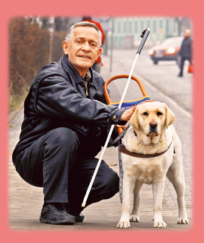

Użytkowość

Pierwotnie był użytkowany jako pies myśliwski, aportujący postrzałki, głównie ptaki. Jedną z cech labradora jest umiejętność zapamiętania miejsca upadku kilku postrzelonych ptaków i następnie zaaportowanie jednego po drugim do myśliwego.
Ze względu na umiejętność współpracy z człowiekiem labradory są współcześnie wykorzystywane w różnych dziedzinach, niezwiązanych z łowiectwem, takich jak:
- psy ratownicze (gruzowiskowe, lawinowe i do ratownictwa wodnego),
- przewodnicy ociemniałych,
- psy rodzinne, sprawdzające się także w sportach kynologicznych,
- psy wykorzystywane w terapii chorych,
- psy policyjne wykorzystywane do wykrywania narkotyków,
- psy wykorzystywane przez straż pożarną w grupach poszukiwawczo-ratunkowych,
- psy wykorzystywane przez Służbę Celną do wykrywania wyrobów tytoniowych, narkotyków